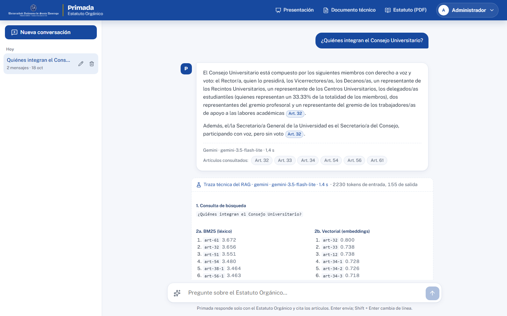
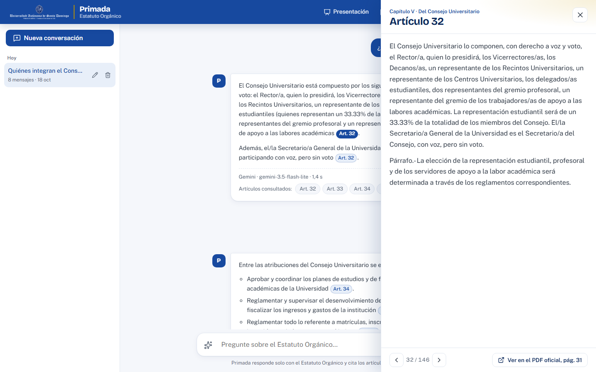

Asistente conversacional del Estatuto Orgánico de la UASD, con inteligencia artificial y respuestas citadas
Edwin A. Roman Seberino (100732067) · Profesor: Radhames Silverio González · Universidad Autónoma de Santo Domingo
Objetivo: respuestas claras, breves y verificables (con el artículo citado), y la honestidad de decir "el Estatuto no lo cubre".
Composition API, composables (useChat, useConversaciones, useConfiguracion), Vue Router (hash) y Vite.
gemini-3.5-flash-lite con streaming SSE y gemini-embedding-2 para los vectores. Sin SDK: fetch directo.
BM25 en TypeScript, similitud de coseno y fusión RRF escritos para el proyecto.
pdfjs-dist en Node para extraer y segmentar el Estatuto en build.
Web Crypto (AES-GCM + IndexedDB), marked + DOMPurify, lucide.
Evaluación de recuperación, Playwright, GitHub Pages.
BUILD (una vez, Node) NAVEGADOR (cada pregunta)
┌──────────────────────────────┐ ┌───────────────────────────────────────────────┐
│ PDF oficial (113 págs.) │ │ Vue: ChatView · Compositor · Burbujas · Citas │
│ └► construir-corpus.mjs │ │ │ pregunta │
│ limpieza, capítulos, │ estatuto │ ▼ │
│ 146 artículos, páginas│──.json──────►│ Recuperador: BM25 + vectorial → RRF → top-8 │
│ └► generar-embeddings.mjs │ embeddings │ │ artículos │
│ gemini-embedding-2 │──.json──────►│ ▼ │
│ 768 dims, Int8 │ │ Prompt: reglas + <articulo numero="N"> │
└──────────────────────────────┘ │ ▼ │
│ Cadena: Gemini ─falla─► Groq ─falla─► sin IA │
Persistencia en el cliente: │ ▼ streaming │
localStorage (conversaciones, config) │ Respuesta con [Art. N] → panel del artículo │
IndexedDB (clave de cifrado no extraíble) │ → página exacta del PDF │
└───────────────────────────────────────────────┘
Hospedado como sitio estático en GitHub Pages. Ningún servidor propio guarda datos ni claves.
<articulo>.[Art. N]. Si no alcanza: «El Estatuto Orgánico no contiene información suficiente…».¿Por qué RAG si el Estatuto cabe entero en el contexto (~45 mil tokens)? Porque reduce ~10× los tokens por pregunta, respeta los límites de la capa gratuita y hace explícita la "búsqueda inteligente" que pide la práctica.
Usted es «Primada», asistente del Estatuto Orgánico de la UASD.
1. Responda únicamente con los artículos que aparecen en <contexto>.
2. Cite el artículo que respalda cada afirmación: [Art. N].
3. Si el contexto no alcanza, diga textualmente: «El Estatuto Orgánico no
contiene información suficiente para responder esta pregunta.»
4. Si la pregunta no trata sobre el Estatuto, indíquelo con cortesía.
5. Español claro y breve, trato de usted, sin emojis.
6. Use la conversación previa para entender seguimientos, pero fundamente
solo en el contexto actual.
<contexto>
<articulo numero="16" fuente="Artículo 16. Capítulo II: …">
Las Facultades son las unidades fundamentales de la Universidad…
</articulo>
…
</contexto>
Enter envía.#/c/<id>.

Gemini → Groq → modo extractivo (artículos sin redactar). Ante cuota, red o bloqueo, la demo sigue respondiendo y un aviso explica qué pasó.
Sin backend, la clave viaja en cada petición: por eso está restringida por dominio y en capa gratuita. El admin la ingresa en la app; se guarda cifrada con una clave no extraíble del dispositivo.
Markdown saneado con DOMPurify; solo enlaces http(s); las citas se validan contra los artículos reales.
Frase fija cuando no hay información; rechazo cortés de temas ajenos; el modelo nunca cita artículos que no recibió.
| Nivel | Qué se prueba | Cómo |
|---|---|---|
| Corpus | 146/146 artículos, sin faltantes ni duplicados; capítulos completos | Validaciones del script de build |
| Recuperación | Acierto@5 con las 35 preguntas sugeridas (BM25, vectorial, híbrida) | npm run evaluar |
| Interfaz | Login y permisos, citas, panel de artículo, seguimiento, persistencia, respaldo ante 429, cifrado de la clave, móvil | Playwright con la API de Gemini simulada (27 comprobaciones) |
| Extremo a extremo | Preguntas reales contra Gemini con la clave restringida | Manual, registrado en el documento técnico |
| Diseño | Antipatrones visuales, movimiento, accesibilidad básica | Detector de impeccable, revisión de animaciones, teclado |
Demostración en vivo: Primada
Código fuente: github.com/ecompute30/Lab_programacion3_INF5170 · Carpeta ProyectoFinal_ChatbotEstatutoUASD